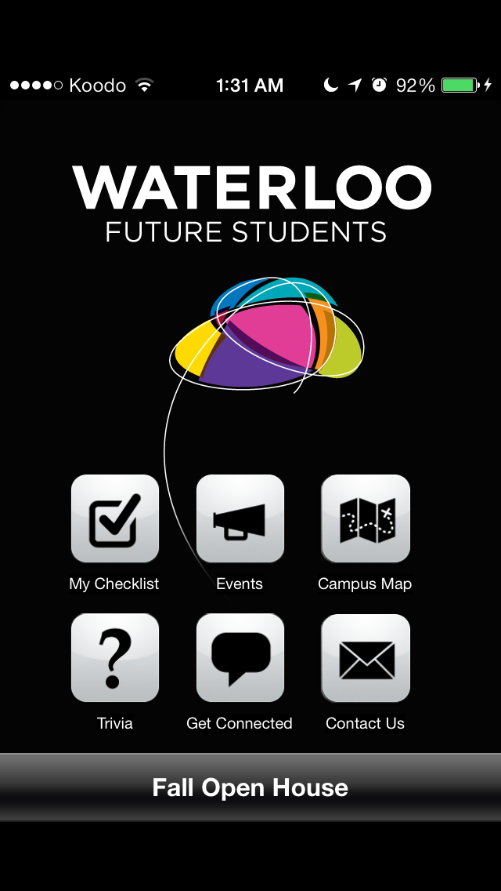
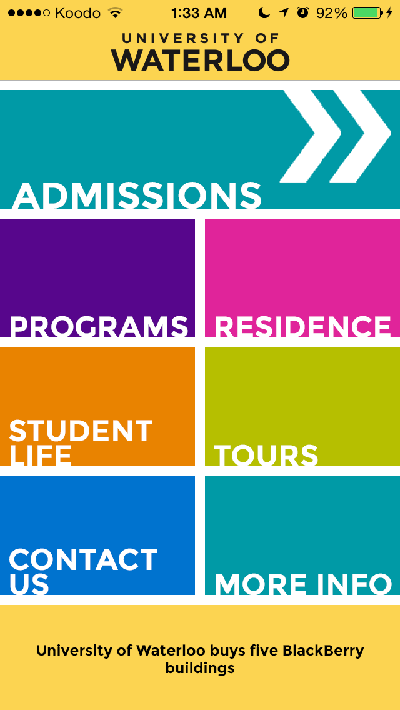
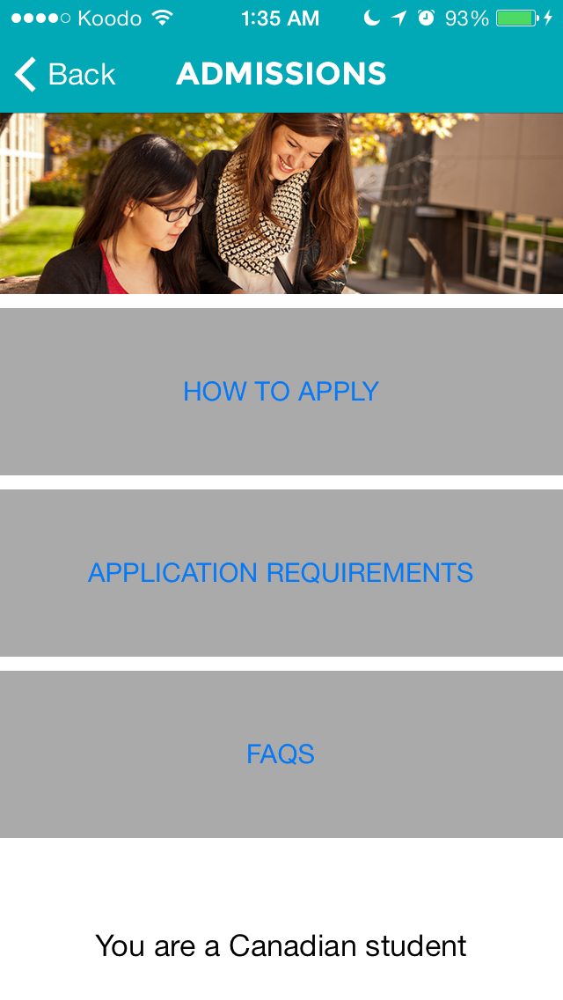
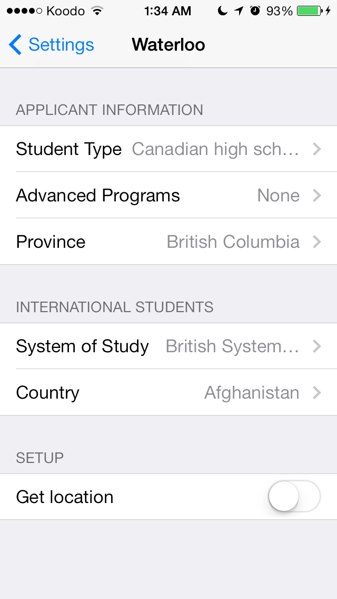
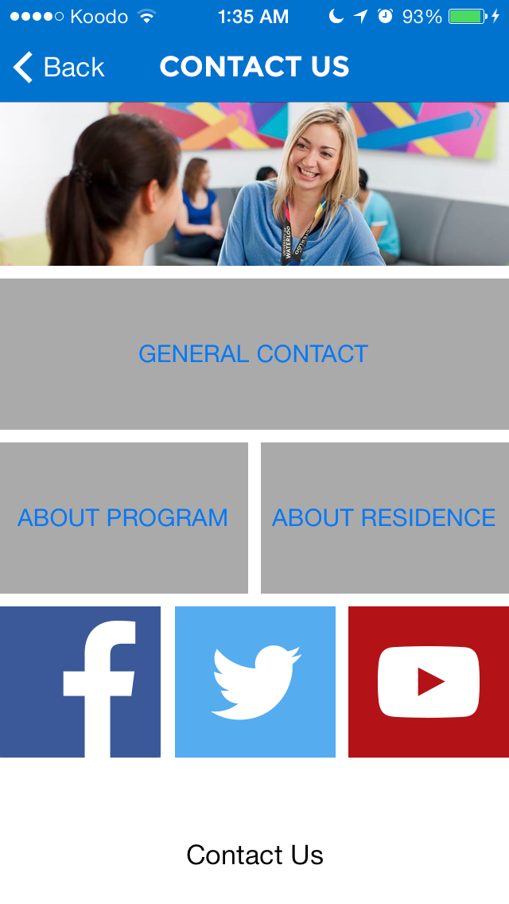

Waterloo Admissions is an app-in-progress to help prospective students apply to the University of Waterloo. The app is my current goal in learning how to develop for iOS using Objective-C. In addition, I wanted to challenge myself by following both Waterloo’s Brand Guidelines as well as Apple’s iOS 7 Human Interface Guidelines.
Although I’ve already created an app for the iPhone before with Math Magician, I wanted to learn how to design the app properly using best practices. I decided to start by learning Objective-C with a tutorial called Program iPhone Apps: Become an iPhone Developer on Skillshare. After I finished the Objective-C section there, I moved onto the updated version of the same course called How to Make an iPhone App for iOS 7 to learn how to use Xcode. I followed the Skillshare tutorials up with Apple’s Start Developing iOS Apps Today tutorial after I signed up for the developer program.
Before I started writing code, I also did some research about the type of material that was expected to be present in an app for a university. First I looked at the current Waterloo Future Students app, which looks like this:
I remembered looking at the app when I was applying for universities and recalled that the only useful section for me was the My Checklist section. However, the app would show deadlines that were irrelevant to me and continue to show items that were past their deadlines or that I had marked off as finished. The Campus Map section would crash when opened as I lived in British Columbia, and the Contact Us section was less useful for me for the same reason. The app was also in need of a redesign as it did not meet iOS 7 standards and did not stretch to fit the screen of an iPhone 5 or 5S.
I also looked at the apps for University of British Columbia, Simon Fraser University, University of Texas, MIT, and Harvard. Of these, I found the UBC app the most useful for prospective students, as the other apps seemed to be designed mostly for students that currently attended the university.
The UBC app had the following sections:
Compared to Waterloo’s app, the Apply section and the Explore section seemed similar to the My Checklist section, but the Plan list was a notable feature that was unavailable for Waterloo students. The Augmented Reality section obviously cannot be implemented in the app without the university’s cooperation, so that feature can be ignored.
Then I looked at the university’s official promotional items for prospective students. Notably, the link on the front page of Waterloo’s website for future students led directly to the Programs page instead of the Find Out More home. I also went through the University’s Admissions brochures, which I found very appealing during my application process. I noticed that boxes filled with faculty colours with words written entirely in capital letters in the corner of the boxes were common design elements.
I cataloged a list of what Waterloo seemed to focus on the most in their promotions, as well as what other universities often mentioned on their websites, and came up with the following categories that I would have to focus on:
Combined with the outline and the general sense of Waterloo’s graphics style, I drafted up what the first view should look like when the app is launched:
All of the colours here were taken from the digital colour palette section of the Brand Guidelines page. The navigation bar was meant to mimic the front page of Waterloo’s website, while the boxes showed the faculty colours and mimicked the boxes in the brochures. The news ticker on the bottom was added to fill up the space that users with iPhone 4S and below could not see – something that added non-essential functionality for users with iPhone 5 and up. I wanted to keep it incredibly simple just in case I ended up changing a core functionality of the app and the front page needed to be modified.
As I did not have Gotham available to use, since I’m not a staff member, I used Montserrat, a free alternative. You might have also noticed that the navigation bar does not use Helvetica Neue, thus not following Apple’s style. Although I would have liked to keep consistent with Apple’s design guidelines, I made this decision as I believed that Waterloo’s brand took precedence over Apple’s when the purpose of the app was to promote Waterloo. I had also noticed that other brands also took similar approaches to alter the navigation bar, so it seemed that Apple did not mind this decision too much.
Of course, the navigation bar had to change when moving to another view, and the approach of using customized navigation bar seemed like a much worse idea as each navigation bar had to be created as an image individually. However, there weren’t too many tabs, and the resolution of each image was identical, so it wasn’t too much of a problem. Here is a rougher draft of the Admissions section:
You may notice that the colour of the status bar changed to match the colour of the button on the front page. You may also notice that the colour of the status bar changed from black to white. I took advantage of the fact that the view receives a message just before it is displayed, and had it change those two factors in the transition. The image at the top of the section was taken from the Waterloo’s website, and each section has a picture for consistency.
Besides the design, I wanted to take advantage of the fact that the information was going to be displayed in a digital medium. After all, what is the point of the app if it does not provide additional benefits over the brochure?
I wanted to relate my own experience of applying to university and fix the problems that I had, since I was the target demographic just last year. The biggest annoyance for me was having to read the huge table that was presented whenever any information that varied geographically was needed. I lived in British Columbia, so I really did not need to know the standards for every other province in the country. I decided to implement an iOS Settings Bundle to save information about the applicant to cater the information to them in the app.
First, I wanted to determine whether the applicant was applying from Canada or not. If they were applying from Canada, I would look up the province of the applicant. Otherwise, I would store that the applicant was an international student and save their country name.
I started by getting the region format setting for the user. This did not require any permissions and thus allowed me to guess the user’s country if the user was unwilling to enable location services or were using the app from an iPod Touch.
Then I looked up the documentation for Location Services. The provinces in Canada are broad enough that very specific location data was not needed. Therefore, I decided to use the Significant-Change Location Service to first get the country of the user, then get the province of the user if they were Canadian. After this information was obtained, the option to stop trying to get application data was turned on.
I noted that the default settings for the preferences were not actually set unless the user deliberately accessed the preferences page for the app before opening it, a scenario which had almost no chance of happening. Therefore, the applicant preferences would have to be set before any function that required it was used.
Here is the settings page:
The Student Type has been set to Canadian and the Province has been set to British Columbia because I first ran the app when I went back to BC for winter break. The Get location setting has been turned off because the app had already gotten my location to set up this page. If you were wondering why the Admissions view had “You are a Canadian student” on it, it is because I was testing data retrieval from the preferences bundle.
With the location services set up, I would be able to tailor the admission requirements for each program by country or province, and I could only show the relevant dates needed for the How to apply checklist.
The other app-specific feature I wanted to implement was social media integration that was introduced in the previous iOS version. Instead of taking the user to a Safari page, I wanted them to be automatically taken to the respective apps for each social media service. In most cases, if the user wants to go to Waterloo’s Twitter stream, they would have the Twitter app installed. I put the buttons for these in the Contact Us page:
Tapping the Facebook button will automatically take the applicant to the Facebook app to view Waterloo’s Facebook page, and tapping the Twitter button will take them to the Twitter app to Waterloo’s Twitter stream. Unfortunately, there isn’t a way to do this with a YouTube channel, so clicking that button takes them to Safari. If the user does not have Facebook or Twitter installed, it will also take them to Safari as well.
Obviously, there is a lot of work left to do. I am currently working on getting the checklist up, as I have yet to try working with databases (outside of the preferences bundle) on iOS. A custom class that inherits from Table View Controller will also likely be required for this task. The Programs section will also be written in a similar way to the checklist, but it will have to lead to dynamic content. The other major feature I want to add is a quick confirmation page to check to see if the location services were right, and to see if the user is taking any advanced programs. Other sections will most likely be design challenges – using scroll views to display the information in a pretty way.
The most frustrating part about developing the app so far is that Waterloo does not have an API that has relates to future students. I will most likely only take a sample of the data off of Waterloo’s website to create a database for this app, unless I want to scrape the website for information.
I will likely update this page when the Admissions section is finished, when the functionality of the entire app is finished, then when the final polish has been added.